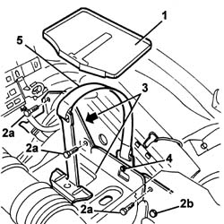

5530B60 BATTERY FASTENING BELT/RETAINERS - REPLACE
- Path
- Procedures > 55 ELECTRICAL EQUIPMENT > 5530 CURRENT GENERATOR > 5530B BATTERY AND LEADS > 5530B60 BATTERY FASTENING BELT/RETAINERS - REPLACE
- Kind
- repair procedure (removal / refitting; the operation number is the code)
- Applies to
- all engines; all production periods
- Interactive page
- https://sloeber94.github.io/elrnDB-aGt/en/#/125001645
Applies to: engines: 1.8 T.SPARK, 2.0 JTS; all production periods
 Removing
Removing
 Refitting
RefittingProceed with removal
Op. 1048A59 PIPE from flow meter to throttle casing hose - R.R.
Applies to: all engines; all production periods
Refitting
RemovingPlace the battery securing belt back in its housing and fasten it using the button.
Refit the battery cage in its seating and fix it with its bolts.
Place the collector under the battery back in its housing.
Proceed with removal
Applies to: engines: 1.8 T.SPARK, 2.0 JTS; all production periods
Proceed with refitting
Op. 1048A59 PIPE from flow meter to throttle casing hose - R.R..
Applies to: all engines; all production periods
Removing
Refitting